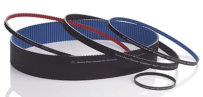

О КОМПАНИИ
Компания «СиТи-Балт» является официальным партнером на Северо-Западе России крупнейших европейских концернов: Megadyne, Chiorino, Ketten Feickert, Intralox и GATES, поставляющих комплектующие для конвейеров и транспортеров. Мы имеем крупный склад, на котором постоянно находится широкий ассортимент продукции, наиболее часто используемой в различных отраслях промышленности. Благодаря этому многие позиции, отсутствующие на складе в Санкт-Петербурге, могут быть поставлены заказчику в течении пяти — семи дней или в течении одного — двух дней при срочном заказе. «Складские» позиции поставляются незамедлительно, по согласованию с заказчиком, самовывозом или с доставкой до предприятия. Наша фирма обладает собственным оборудованием для нарезки, соединения ремней и лент, нанесения покрытий, профилей и толкателей на ремни, а также профилей, перегородок, гофробортов на конвейерные ленты.
ООО «СиТи-Балт» осуществляет сварку и ремонт транспортерных лент, плоских и полиуретановых зубчатых ремней непосредственно на оборудовании заказчика. Также мы модернизируем старые конвейерные линии заказчиков с подбором комплектации. Как официальный партнер производителей, мы несем гарантию на продукцию, поставляемую нами.
100%
Выполненных заказов
18 лет
На рынке
5137
Выполненных договоров
203
Постоянных партнёра
ПРОДУКЦИЯ
Зубчатые, вариаторные, клиновые и поликлиновые ремни марки «MEGADYNE»

Модульные ленты, пластинчатые цепи, их аксессуары и смежная продукция от NGB Ltd. (Израиль)

Инновационные ремни «Gates», охватывающие все сферы применения - от газонокосилки и снегоуборщика до холодильной установки грузовика, - обеспечивают более длительную работу оборудования
Транспортерные и технологические ленты, плоские ремни и покрытия для валов и роликов марки «CHIORINO»
Цепи и звездочки для цепей самого высокого качества марки Ketten Feickert
Модульные ленты, цепи и приводные колеса «Intralox»
ПОСТАВЩИКИ

Итальянский концерн, основан в 1906 г. входит в пятерку самых крупных предприятий выпускающих транспортерные ленты, плоские приводные ремни и покрытия на валы.
ПОДРОБНЕЕКомпания MEGADYNE начала производство приводных ремней в 1957 г. Постоянные исследования и развитие позволили создать широкий диапазон высококачественной продукции, что делает компанию MEGADYNE мировым лидером по производству полиуретановых и резиновых приводных ремней. Фирма MEGADYNE постоянно расширяет свое присутствие на мировом рынке, посредством создания развитой дистрибьюторской сети.
ПОДРОБНЕЕ
Ролики и конвейерные цепи Feickert высочайшего качества с современных производственных мощностей и широкий ассортимент продукции премиум-класса от давних партнеров в Германии, Европе и Азии.
ПОДРОБНЕЕКомпания Sitiriduttori занимается производством высокоточных редукторов и компонентов для гидравлических систем, предлагая инновационные решения для различных отраслей промышленности. Их редукторы известны своей надежностью, долговечностью и эффективностью, обеспечивая оптимальную работу оборудования.
ПОДРОБНЕЕКомпания Chiaravalli Group SpA, которая сегодня является ведущим игроком в секторе промышленных трансмиссий, была основана в 1950-х.
ПОДРОБНЕЕ
В 1917 году Джон Гейтс создал первый в мире резиновый клиновой ремень, и положил начало корпорации Gates. В 1945 году компания Gates изобрела первый зубчатый зубчатый ремень, известный как синхронный ремень. В 1979 году создали змеевидный ремень, который изменил автомобильную трансмиссию, какой мы ее знаем.
ПОДРОБНЕЕ
INTRALOX со штаб-квартирой в Новом Орлеане, штат Луизиана, пригород Харахан, является производителем конвейерных лент. Компания специализируется на модульных пластиковых конвейерных лентах и сопутствующих услугах и оборудовании. J.M. Lapeyre – основатель компании, изобрел технологию их производства еще в 1973 году и поэтому INTRALOX имеет широкий опыт в области проектирования и применения модульных пластиковых конвейерных лент.
ПОДРОБНЕЕ